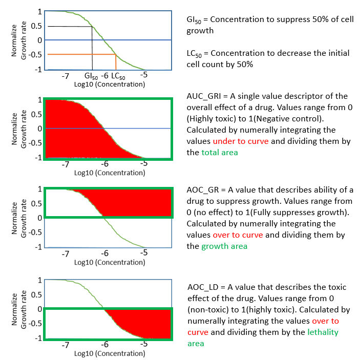

Introduction
The drexplorer2 R package is developed to facilitate the analysis of dose-response data. It can be used to:
- assess the reproducibility of replicates,
- detect outlier data points
- fit different models
- select the best model
- estimate IC (Inhibition Concentration, e.g. IC50) values at different percentiles
- evaluate drug-drug interactions using interaction index
- implement NCI 60 method (estimation of GI50, TGI, LD50 and calculation of AOC_GR, AOC_LD, AUC_GRI)

- implement Hill equation (Estimation of EC50, Emax, Einf, E0 and Hill slope)
- Calculate AUC (Area Under Curve) for all models
A figure summary of its functions can be found from our paper (figure cited from PubMed Central):


Installation
The devtools package is used to install R packages hosted on Github. To install drexplorer2, type the following commands in the R console:
library(devtools) install_github("lshen1/drexplorer2")
Usage
# load the package library(drexplorer2) # GUI for dose-response curve fitting drexplorerGUI_1() # GUI for drug-drug interaction drexplorerGUI_2()
User Manual
A manual is available.